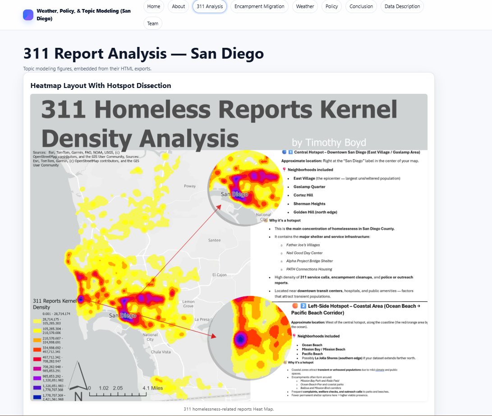
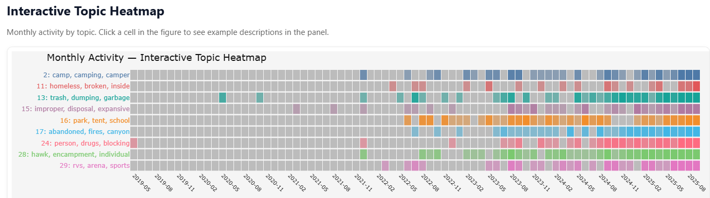

Field of Work
Two disciplines, one map
Everything here sits at the intersection of geography and data science — spatial statistics, computer vision, and interactive cartography applied to problems that affect real neighborhoods.
STAR‑LAB Near‑Miss Detection
Drone-based YOLOv8 tracking and PET conflict analysis for traffic safety.
View project →
Spatial AnalyticsSDHEART 311 Report Analysis
Topic modeling and kernel density mapping of homelessness-related 311 reports.
View project →
DashboardsLive ArcGIS & p5.js Dashboards
Census-tract density, swipe comparisons, and a 55-year national crime map.
Open dashboards →Live Previews
Pulled straight from the live dashboards
These are scaled-down, live renders of the actual embeds — open any of them full size on the dashboards page.